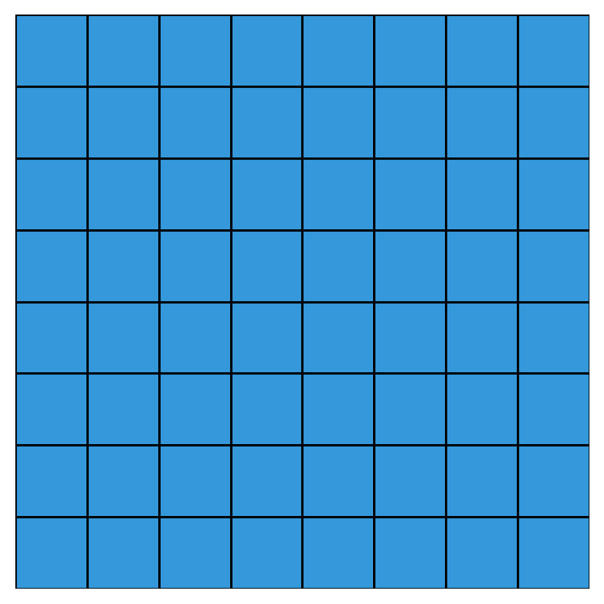

Analysis
Week 1, Wednesday
January 7, 2026
Announcements
- Labs begin next week.
From Monday
Algorithm Analysis
- Correctness — Does it work?
- Efficiency — How long? How much memory?
The Shazam Lesson – Fin
Naive search: “Linear” — too slow
Hash lookup: “Constant” — instant
| Database size | Linear search | Hash lookup |
|---|---|---|
| 1,000 | 1 sec | 0.001 sec |
| 1,000,000 | 1000 sec | 0.001 sec |
| 100,000,000 | 27 hours | 0.001 sec |
How does Shazam actually work?
Speed matters in surprising places
It’s not just Shazam!
YouTube
800 million videos
Every search: < 0.5 sec
Linear search would take hours
Genomics
Human genome: 3 billion base pairs
Finding a gene sequence
Naive: days → Real tools: seconds
Pandemic response
330 million people
Contact tracing within 2 connections
Relationships grow exponentially
As data grows, bad algorithms become impossible.
Analysis
Measuring the value of algorithms
Suppose you have two correct algorithms that solve the same problem — which is better?
- Use different metrics — time, space most common
- Express ________ as a (positive) function:
- Form of function depends on structure of the algorithm:
Intro to Analysis
| 0 | 1 | 2 | 3 | 4 | 5 | 6 | 7 | … | 99,999,999 |
|---|---|---|---|---|---|---|---|---|---|
| 🎵 | 🎵 | 🎵 | 🎵 | 🎵 | 🎵 | 🎵 | 🎵 | … | 🎵 |
Do you have any questions about the
Python?How long does it take to run (in seconds)?
What might determine the running time?
| 0 | 1 | 2 | 3 | 4 | 5 | 6 | 7 | … | 99,999,999 |
|---|---|---|---|---|---|---|---|---|---|
| 🎵 | 🎵 | 🎵 | 🎵 | 🎵 | 🎵 | 🎵 | 🎵 | … | 🎵 |
What factors affect how long find_song_naive takes?
Discussion results…
Machine speed
A faster computer runs the same code faster.
Location of song
At the front? Quick!
At the end? Slow.
Not there at all? Slowest.
Size of database
100 songs vs 100 million songs
We want to characterize the algorithm, not the machine or our luck.
Aside for Cases
- Best case: minimum running time over all inputs
- Worst case: maximum running time over all inputs
- Average case: expected running time (needs probability)
Back to \(T(n)\)
What’s a good name?
What’s a good expression for running time? \(T(n) =\)
What construct do we have that characterizes functions in a way that ignores constants?
The Definition of Big-O
\(f(n)\) is \(O(g(n))\) if there exist constants \(c > 0\) and \(n_0 \geq 0\) such that:
\[f(n) \leq c \cdot g(n) \quad \text{for all } n \geq n_0\]

Other Definitions
\(f(n)\) is \(O(g(n))\) if there exist constants \(c > 0\) and \(n_0 \geq 0\) such that:
\[f(n) \leq c \cdot g(n) \quad \text{for all } n \geq n_0\]
\(f(n)\) is \(\Omega(g(n))\) if there exist constants \(c > 0\) and \(n_0 \geq 0\) such that:
\[f(n) \geq c \cdot g(n) \quad \text{for all } n \geq n_0\]
\(f(n)\) is \(\Theta(g(n))\) iff it is both \(O(g(n))\) and \(\Omega(g(n))\).
Example 1
- Python questions?
- What’s the Big-O?
Example 2
For \(n = 6\):
What are the values of
iandjfor the 17th element counted?What are the values of
iandjfor the 32nd element counted?What’s the Big-O?

Example 3
For \(n = 6\):
What are the values of
iandjfor the 4th element counted?What are the values of
iandjfor the 12th element counted?What’s the Big-O?
The Triangle Sum
\[1 + 2 + 3 + \ldots + n = \frac{n(n+1)}{2}\]
Next week
More analysis